O QUE VOCÊ
VAI ENCONTRAR:
- 😊 Funciona com qualquer pote
- ➕ 60 saladas deliciosas
- 🔑 Molhos irresistíveis
- 😊 O segredo das camadas
- ➕ Conservação de 7 dias
- 🕐 Prontas em 30 minutos
- 📋 Passo a passo de preparo

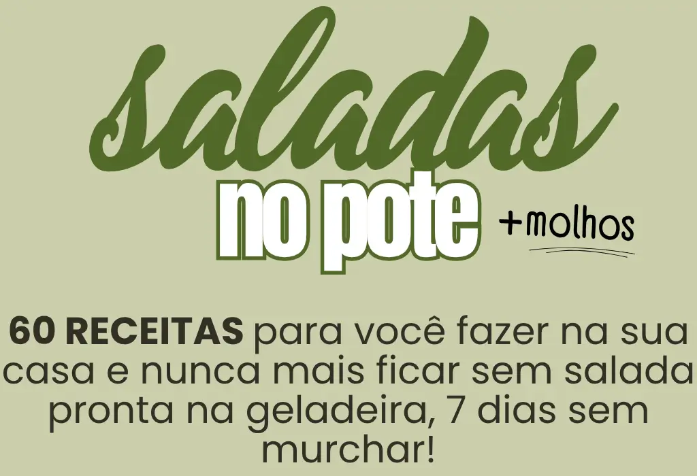
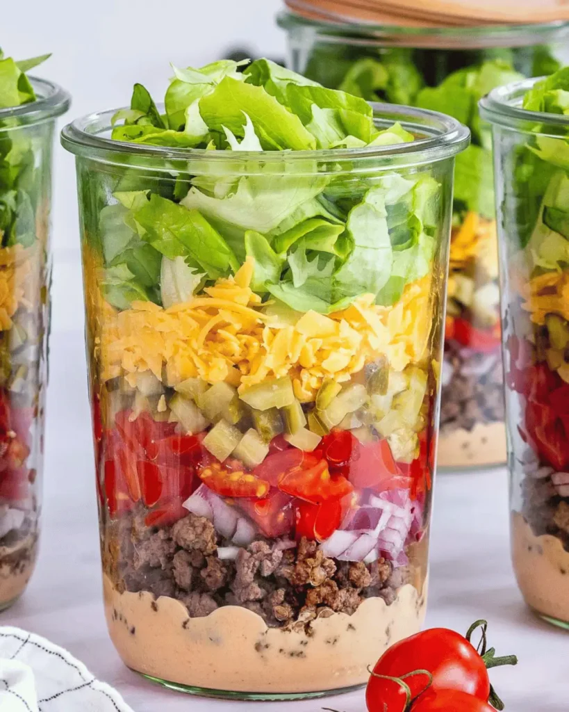
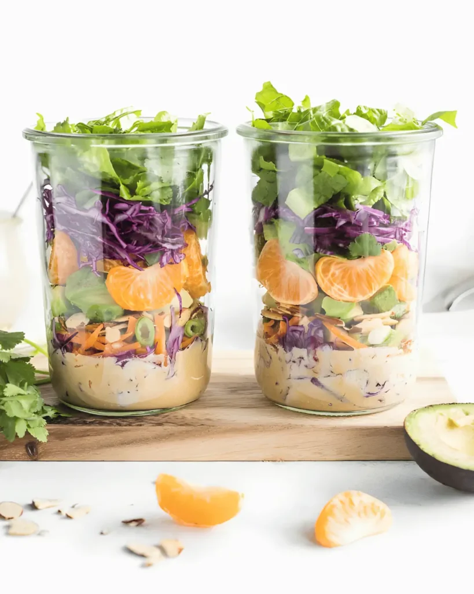
Conservação: 7 dias
Calorias: 100 kcal
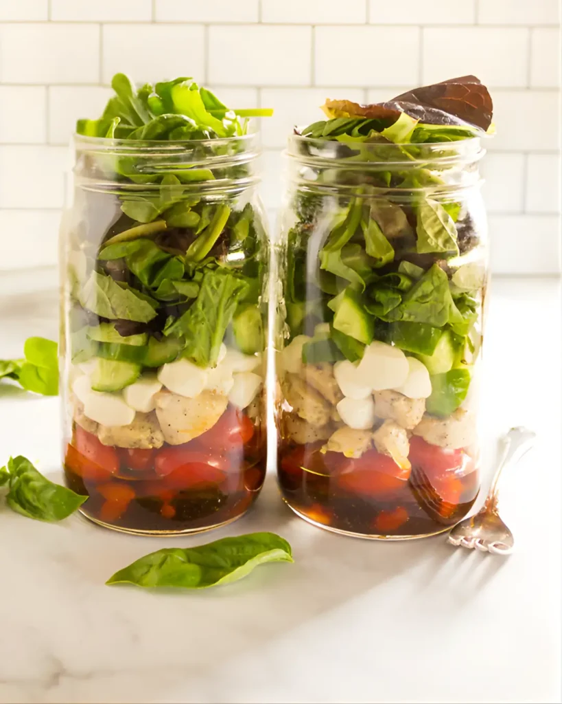
Conservação: 7 dias
Calorias: 120 kcal
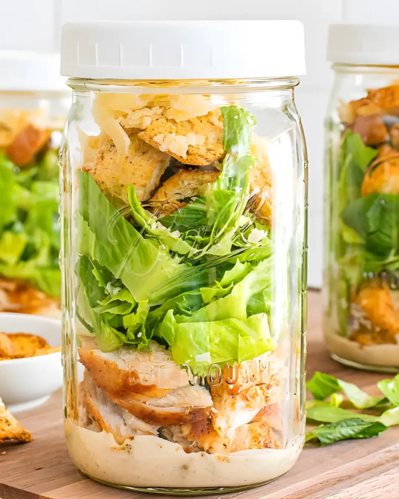
Conservação: 7 dias
Calorias: 115 kcal

Conservação: 7 dias
Calorias: 180 kcal
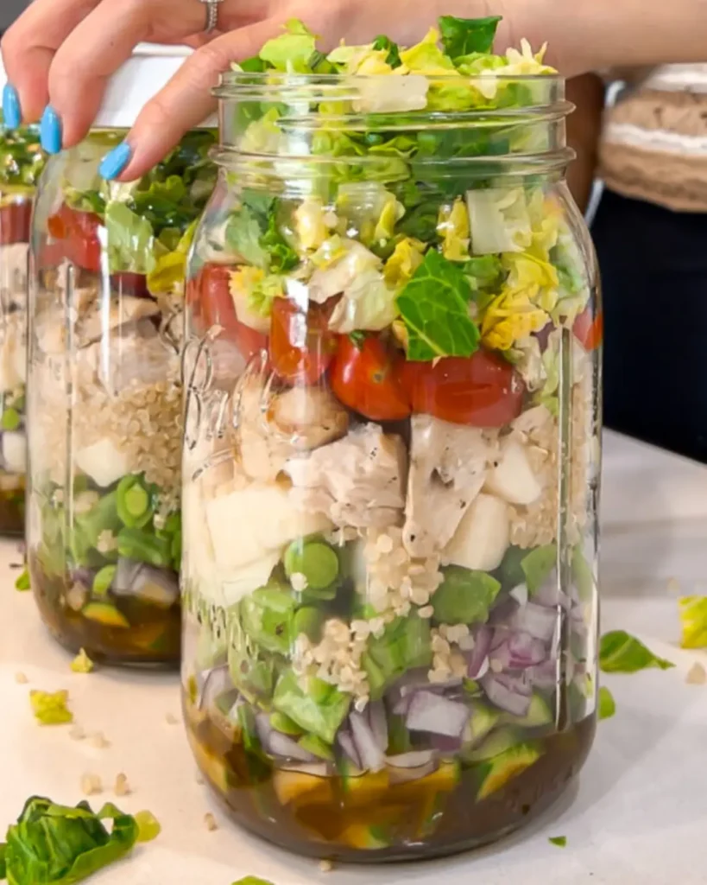
Conservação: 7 dias
Calorias: 120 kcal
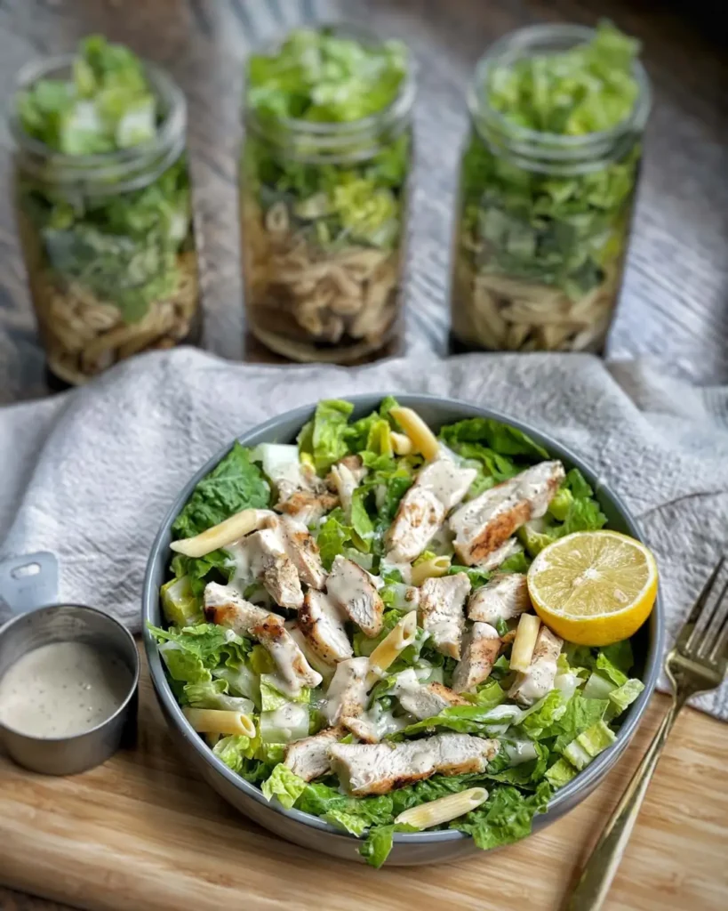
Conservação: 7 dias
Calorias: 130 kcal
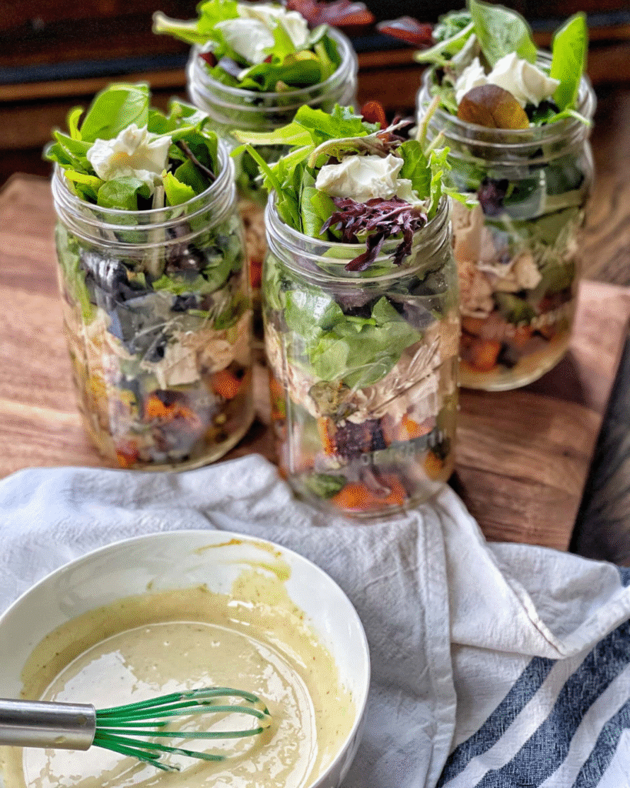
Conservação: 7 dias
Calorias: 160 kcal


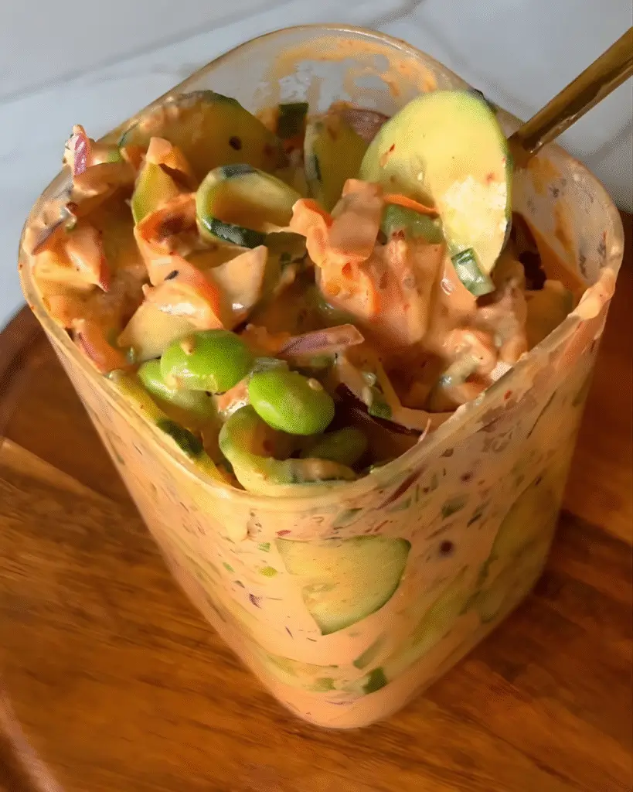
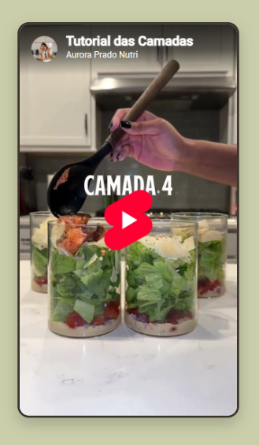
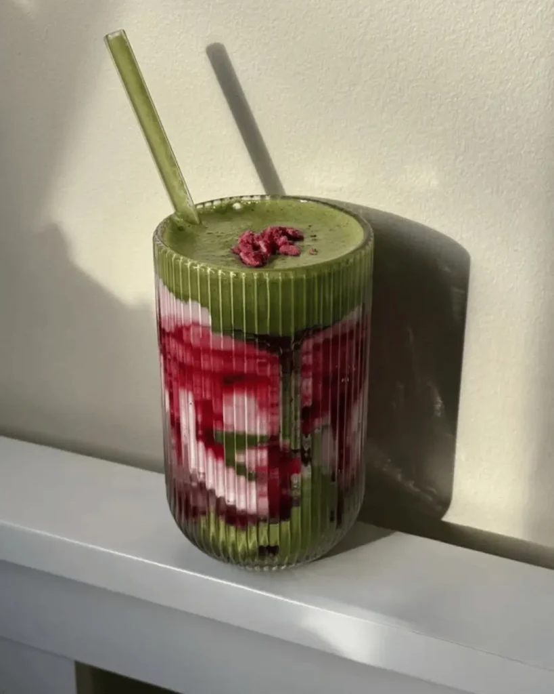
SMOOTHIES DETOX
20 RECEITAS
R$29,90 HOJE É GRÁTIS!
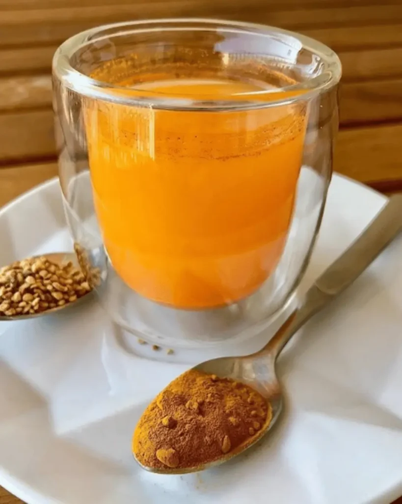
SHOTS MATINAIS
5 RECEITAS
R$29,90 HOJE É GRÁTIS!

ÁGUAS SABORIZADAS
15 RECEITAS
R$29,90 HOJE É GRÁTIS!
ENTÃO VOCÊ PRECISA DISSO:
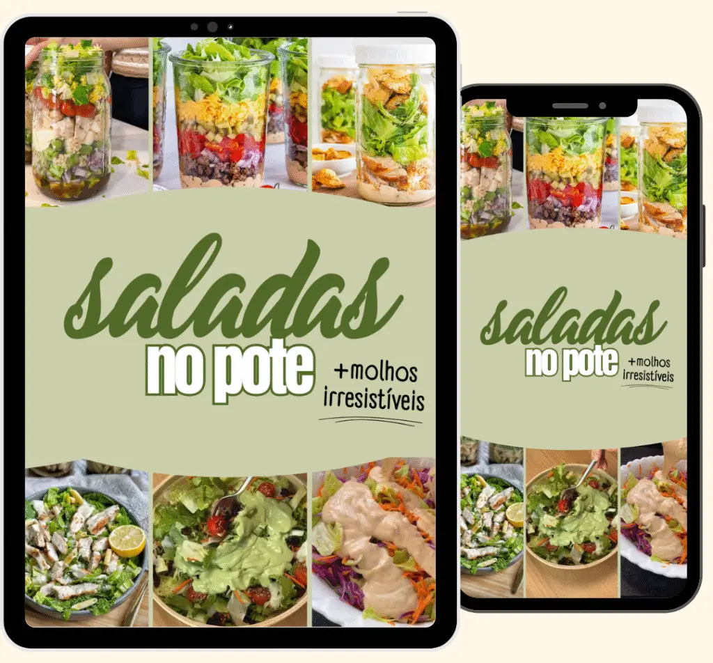
De R$129,00 ...
por 6x de
R$5,66
OU R$29,90 À VISTA
COMPRAR AGORA!**OFERTA EXPIRA HOJE**

Minhas receitas de Saladas no Pote e Molhos Irresistíveis sempre fizeram sucesso na internet. Resolvi reunir as 60 melhores receitas em um único lugar e compartilhar esse conhecimento com você também.
Veja as mensagens que recebo quase todos os dias:


Assim que o pagamento for confirmado, você recebe acesso imediato pelo WhatsApp e por e-mail com todas as 60 receitas de saladas, os molhos irresistíveis e todos os bônus. Tudo disponível para você baixar e começar a usar no mesmo instante. Sem espera, sem burocracia. Qualquer dúvida, é só entrar em contato pelo e-mail: contato@nutriliacastro.site que a gente te ajuda rapidinho.
Sim! Você tem 7 dias de garantia incondicional para testar as receitas. Se não gostar por qualquer motivo, é só pedir o reembolso e devolvemos 100% do valor investido. Simples assim.
Não precisa! Qualquer pote que você já tem em casa funciona perfeitamente. Pode ser de plástico, de vidro, grande ou pequeno. O importante é que feche bem para manter a salada fresca. Nada de gastar dinheiro extra com equipamento.
Com certeza! Todas as 60 receitas já vêm com molhos específicos e deliciosos. São molhos caseiros, fáceis de fazer e que transformam completamente o sabor da salada. Você nunca mais vai precisar comprar aqueles molhos industrializados caros e cheios de conservantes.
Quando montada corretamente seguindo o método das camadas que eu ensino, a salada dura de 5 a 7 dias fresquinha na geladeira. Isso significa que você prepara tudo no domingo e tem almoço ou jantar saudável pronto a semana toda. Zero desperdício, zero trabalho diário.
Sim, esse é exatamente o método que eu ensino! A maioria das mulheres prepara no sábado ou domingo as saladas da semana inteira em cerca de 30 minutos. É muito mais prático do que ter que picar, lavar e montar salada todo dia. Você ganha tempo, economiza energia e nunca fica sem opção saudável na correria.
Pode sim! Muitas alunas usam as receitas para vender e gerar renda extra. Dependendo da sua região e dos ingredientes, saladas no pote são vendidas entre R$ 11 e R$ 16 por pote (às vezes até mais, dependendo do tamanho e incrementos). É uma forma inteligente de transformar conhecimento em lucro.
Super fáceis! Todas as receitas têm instruções claras e passo a passo simples. Não precisa ser expert na cozinha. Se você sabe picar, misturar e temperar, você consegue fazer. As receitas foram pensadas justamente para quem tem rotina corrida e não quer complicação.
Sim! Todas as receitas usam ingredientes simples e acessíveis que você encontra em qualquer supermercado, feira ou sacolão. Nada de ingredientes exóticos ou caros que você nunca ouviu falar. Comida de verdade, com ingredientes de verdade.
Não precisa de nada disso. Você só precisa de:
Potes (os que você já tem em casa)
Colheres
Uma faca
Uma tábua de corte
É isso. Nada de balança de precisão, processador, Air Fryer ou qualquer outro equipamento caro. Simplicidade total.